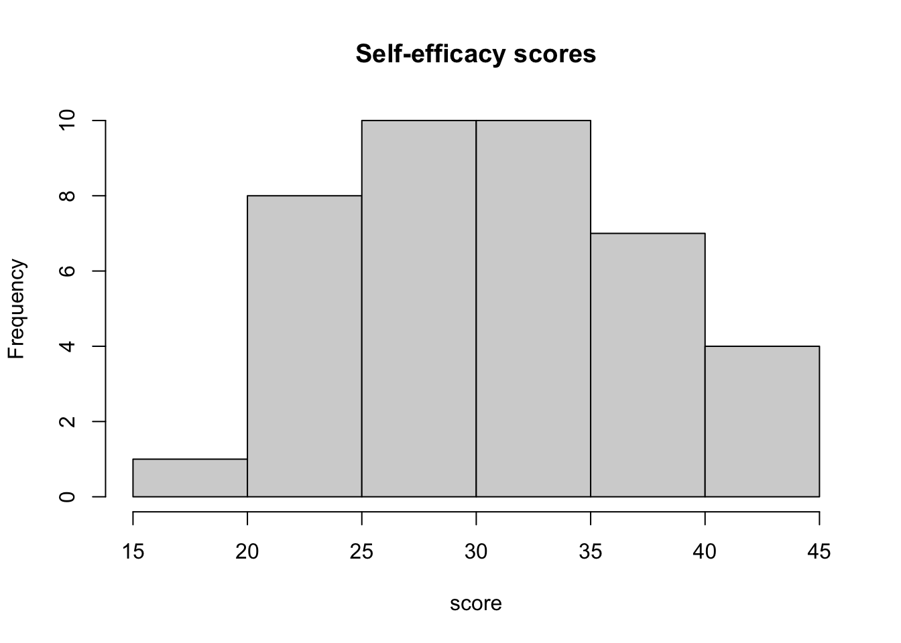
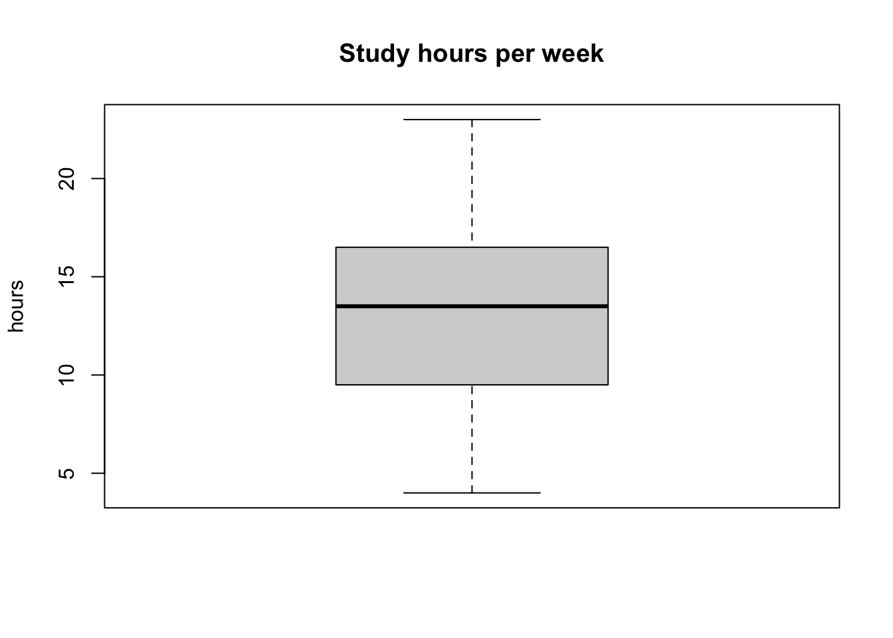
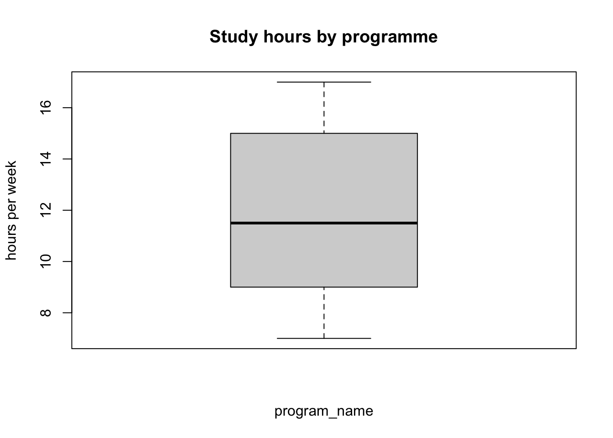

survey <- read.csv("data/class_survey.csv")r_tutorial_week_02
Werkcollege 2
How to use this tutorial
Welcome back! Last week you learned some basics including objects, vectors, indexing, and functions. This week we work with a dataset: a whole table of data, like the answers from our class questionnaire.
Work through this page carefully, from top to bottom. Every short explanation is followed by a Your turn task to do yourself.
General tips:
- Read each part slowly and in order. Each step builds on the one before it.
- Type the code yourself instead of copying and pasting it. You learn faster this way.
- Errors are normal. Read the message and try again.
- If you are stuck, ask a teacher.
- Save your work often.
1 Start workflow
Based on last week’s tutorial, we always start with the following start workflow:
- Open RStudio: click on RStudio application.
- Set the working directory: click Session > Set Working Directory > Choose Directory.
- Open a new script: click File > New File > R Script. Or, open an existing script: click File > Open File > and navigate to the file.
- On the first line, write a comment with the title, for example:
# R tutorial - Week 2. - Save the script as
week2.Rin yourresearch_methodsfolder.
Today we work in a new script. However, often we need to pick-up previous work and open an existing script.
Your turn
Complete the start workflow for working with a new script.
2 Getting the data ready
Our class answered a short questionnaire. The answers were collected, made anonymous (no names, only a number per person), and saved as a CSV file. A CSV file is a simple table where the values are separated by commas. Almost every program can open it.
Your turn
- Download the file
class_survey.csvfrom Brightspace. - Move it into the
datafolder inside yourresearch_methodsfolder (the samedatafolder from the structure we made in Week 1).
NoteWhy a data folder?
Keeping your data in one data folder, separate from your scripts, keeps your project tidy and makes the file easy to find later.
3 Loading the data
RStudio does not know about the file until you load it. We load a CSV with the function read.csv(). Inside the brackets we put the path to the file, in quotes. Because our working directory is research_methods, and the file is in the data folder, the path is "data/class_survey.csv".
We store the table in an object so we can use it again. We will call it survey.
The table is now stored. Look at the Environment pane (top-right): survey appears, with the number of rows (people) and columns (questions).
WarningWatch out
If you see Error: cannot open file ... No such file or directory, R cannot find the file. Check two things:
- your working directory is
research_methods: rungetwd()to print the current working directory - the file really sits in the
datafolder and is spelled exactly, including.csv: in the bottom-right pane you can click on files and navigate to the folder.
TipGoing further (optional): Excel files
Other file formats, such as Excel files (.xlsx or .xls), cannot be opened with read.csv(). They need an extra package, for example readxl with its function read_excel(). The easiest path for now is to open the Excel file once and save it as a CSV.
Your turn
Load the data into an object called survey, then check that survey appears in the Environment pane.
4 Data frames
The object survey is a data frame. A data frame is R’s word for a table, in our case:
- each row is one participant (one person who answered);
- each column is one variable (one question or measure).
You can think of a data frame as several vectors (from Week 1) standing side by side, one per column.
To use a single column, write the data frame name, then a dollar sign $, then the column name:
survey$age # all the ages, as a vector
#> [1] 25 17 22 20 21 18 24 19 17 22 18 18 21 24 21 19 19 19 20 24 18 18 25 21 25
#> [26] 18 25 23 18 21 21 20 17 24 25 19 25 23 20 25A column is just a vector, so everything you learned last week still works:
mean(survey$age) # average age
#> [1] 20.975
survey$age[1] # the first person's age
#> [1] 25
survey$age[survey$age > 20] # ages above 20
#> [1] 25 22 21 24 22 21 24 21 24 25 21 25 25 23 21 21 24 25 25 23 25You can also pick a value by its row and column, inside square brackets, with a comma in between: survey[row, column].
survey[1, ] # the whole first row (a comma, then nothing = all columns)
#> id age self_efficacy study_hours program
#> 1 1 25 40 4 2
survey[1, 2] # row 1, column 2
#> [1] 25Your turn
Print the self_efficacy column. Then print the self_efficacy score of the third person, using $ and square brackets. Also, print the minimum and maximum self_efficacy score.
5 Looking at your data
Before changing anything, always look at your data first. Here are the most useful commands.
How big is the table?
dim(survey) # dimensions: number of rows and columns
#> [1] 40 5
nrow(survey) # number of rows (people)
#> [1] 40
ncol(survey) # number of columns (variables)
#> [1] 5What are the columns called?
names(survey)
#> [1] "id" "age" "self_efficacy" "study_hours"
#> [5] "program"See the first few rows:
head(survey)
#> id age self_efficacy study_hours program
#> 1 1 25 40 4 2
#> 2 2 17 42 14 1
#> 3 3 22 43 8 1
#> 4 4 20 44 12 2
#> 5 5 21 41 13 2
#> 6 6 18 27 8 2See the type of each variable with str() (short for structure):
str(survey)
#> 'data.frame': 40 obs. of 5 variables:
#> $ id : int 1 2 3 4 5 6 7 8 9 10 ...
#> $ age : int 25 17 22 20 21 18 24 19 17 22 ...
#> $ self_efficacy: int 40 42 43 44 41 27 36 29 30 30 ...
#> $ study_hours : int 4 14 8 12 13 8 17 18 15 22 ...
#> $ program : int 2 1 1 2 2 2 1 2 2 2 ...Notice that program is shown as a number (int). R does not know yet that it is really a category (1, 2, or 3 stand for study programmes). We will fix that soon.
Get a quick summary of every variable with summary():
summary(survey)
#> id age self_efficacy study_hours program
#> Min. : 1.00 Min. :17.00 Min. :16.00 Min. : 4.00 Min. :1.00
#> 1st Qu.:10.75 1st Qu.:18.75 1st Qu.:26.75 1st Qu.: 9.75 1st Qu.:1.00
#> Median :20.50 Median :21.00 Median :31.00 Median :13.50 Median :2.00
#> Mean :20.50 Mean :20.98 Mean :31.27 Mean :13.38 Mean :1.85
#> 3rd Qu.:30.25 3rd Qu.:24.00 3rd Qu.:36.00 3rd Qu.:16.25 3rd Qu.:2.00
#> Max. :40.00 Max. :25.00 Max. :44.00 Max. :23.00 Max. :3.00For numbers, summary() shows the smallest value, the 1st Quartile, the median, the average, the 3rd Quartile, and the largest value. Because R still thinks program is a number, it even shows its “average”, which makes no sense for a category. Another reason to recode it later.
Finally, you can open the table in a spreadsheet view. Type this in RStudio (the capital V matters):
View(survey)
WarningWatch out
It is View() with a capital V. Remember from Week 1: R is case-sensitive, so view() with a small v will not work.
Your turn
Use three of these commands on survey: dim(), names(), and summary(). How many people answered the questionnaire? How many variables are in the dataset? What’s the average age?
6 Cleaning and changing your data
Real data almost always needs some tidying before we describe it. We will keep the loaded data in survey and change it step by step.
6.1 Filtering: choosing rows
Filtering means keeping only the rows that match a rule. We use square brackets with a condition before the comma: survey[condition, ]. The empty part after the comma means “keep all columns”.
adults <- survey[survey$age >= 18, ] # keep only people aged 18 or older
nrow(adults) # how many are left?
#> [1] 37Read it as: “keep the rows of survey where age is 18 or higher.”
WarningWatch out
Do not forget the comma. survey[survey$age >= 18, ] keeps rows. Without the comma, R gets confused, because it cannot tell rows from columns.
Your turn
Create an object called keen that keeps only the people who study more than 15 hours per week (study_hours > 15). How many people are in keen?
6.2 Choosing and removing columns
Sometimes a column is not useful for analysis. The id number, for example, only tells people apart; it is not something we study. We remove a column by setting it to NULL:
survey$id <- NULL # remove the id column
names(survey) # id is gone
#> [1] "age" "self_efficacy" "study_hours" "program"Your turn
Look at the column names again with names(survey) and check that id is no longer there. What other function coud you use to check this?
6.3 Making a new variable
We can build a new column from the columns we already have. Give the new column a name with $, and put a calculation on the right of the arrow <-.
survey$study_per_day <- survey$study_hours / 7 # weekly hours -> daily hours
head(survey)
#> age self_efficacy study_hours program study_per_day
#> 1 25 40 4 2 0.5714286
#> 2 17 42 14 1 2.0000000
#> 3 22 43 8 1 1.1428571
#> 4 20 44 12 2 1.7142857
#> 5 21 41 13 2 1.8571429
#> 6 18 27 8 2 1.1428571The new column study_per_day now appears in the table.
Your turn
Make a new variable study_per_day_rounded that rounds study_per_day to whole numbers, using the function round(). Then look at the first rows.
6.4 Recoding values
Recoding means changing values into clearer ones. Our program column holds the codes 1, 2, and 3, but those numbers are hard to read. We will make a new column with real names. We start it as NA (R’s word for “not available / empty”) and then fill it in:
survey$program_name <- NA # a new, empty column
survey$program_name[survey$program == 1] <- "Pedagogy"
head(survey)
#> age self_efficacy study_hours program study_per_day program_name
#> 1 25 40 4 2 0.5714286 <NA>
#> 2 17 42 14 1 2.0000000 Pedagogy
#> 3 22 43 8 1 1.1428571 Pedagogy
#> 4 20 44 12 2 1.7142857 <NA>
#> 5 21 41 13 2 1.8571429 <NA>
#> 6 18 27 8 2 1.1428571 <NA>Read one of those lines as: “for the rows where program equals 1, set program_name to Pedagogy.” We kept the original program column, which is good practice: never throw away the raw values.
WarningWatch out
To test “is equal to”, use two equals signs ==, just like in Week 1. One equals sign = will not work here.
Your turn
Check your recoding with table(survey$program_name). You should see the pedagogy programme names and NAs with a count for each. Additionally, recode psychology (value 2) and sociology (value 3) into the program_name variable.
6.5 Putting values into categories
Categorizing means turning a number into groups. A common tool is ifelse(). It takes three parts: a test, the value if the test is TRUE, and the value if it is FALSE.
survey$efficacy_level <- ifelse(survey$self_efficacy >= 32, "higher", "lower")
table(survey$efficacy_level)
#>
#> higher lower
#> 19 21Here, everyone with a self-efficacy score of 32 or more gets "higher", and the rest get "lower".
Your turn
Make a variable studies_a_lot that is "yes" when study_hours is 14 or more, and "no" otherwise. Then count the groups with table().
6.6 Taking a random subsample
A subsample is a smaller, random part of your data. We pick random row numbers with sample(), then keep those rows.
Because the choice is random, we first use set.seed(). This makes the “random”vchoice the same every time you run it, so your work stays reproducible.
set.seed(123) # makes the random choice repeatable
sub_rows <- sample(1:nrow(survey), 10) # pick 10 random row numbers
subsample <- survey[sub_rows, ] # keep those rows
nrow(subsample)
#> [1] 10Your turn
Create your own subsample of 15 people in an object called my_sample. First write set.seed(1), then use sample() and square brackets as above. Check it has 15 rows with nrow().
7 Describing your sample
Now that the data is clean, we describe it. This is the first step of almost every study: who is in the sample, and how are the values spread out?
7.1 Counting categories with table()
For categories (text variables), we count how often each value appears with table().
table(survey$program_name)
#>
#> Pedagogy
#> 147.2 Numbers in short: mean and sd
For numbers, the average (mean()), the median (median()), and the standard deviation (sd()) give a quick picture.
mean(survey$self_efficacy) # average self-efficacy
#> [1] 31.275
sd(survey$self_efficacy) # how spread out the scores are
#> [1] 6.6293357.3 Histograms with hist()
A histogram shows how a numeric variable is distributed. It puts the values into bars: tall bars mean many people have those values.
hist(survey$self_efficacy,
main = "Self-efficacy scores", # title
xlab = "score") # label for the x-axis
Your turn
Make a histogram of age. Give it a clear title and an x-axis label. Then, print the mean and median of age, are they similar or different? Argue why mean and median are similar or different, and relate it to the histogram you just plotted.
7.4 Boxplots with boxplot()
A boxplot is another way to show the distribution of a numeric variable. The thick line is the middle value (the median), the box holds the middle half of the people (the interquartile range), and the lines reach out to the smallest and largest typical values.
boxplot(survey$study_hours,
main = "Study hours per week",
ylab = "hours")
Boxplots are useful when you compare groups. We do that with a tilde ~, which you read as “by”. The variable before the ~ is the number; the variable after it is the group.
boxplot(study_hours ~ program_name,
data = survey,
main = "Study hours by programme",
ylab = "hours per week")
Now you can see whether students in some programmes study more than in some others in your sample.
Your turn
Make a boxplot of self_efficacy by program_name. Which programme has the highest middle value? What can you conclude from it?
8 Saving your cleaned data
You changed the data, so save the clean version under a new name. This keeps the original file safe. We use write.csv() and add row.names = FALSE so R does not add an extra column of row numbers.
write.csv(survey, "data/class_survey_clean.csv", row.names = FALSE)Your turn
Save your cleaned survey as class_survey_clean.csv in your data folder. Then check in the Files pane (bottom-right) that the new file is there. Also, save your script in script folder.
9 Recap: what you can now do
Last week you handled single numbers and vectors. You can now work with a whole dataset. You can:
- load a CSV file with
read.csv()and store it as a data frame; - reach a single column with
$, and a single cell with[row, column]; - inspect data with
dim(),names(),head(),str(),summary(), andView(); - filter rows with a condition;
- make new variables and remove ones you do not need;
- recode values into clear labels and put numbers into categories;
- take a reproducible random subsample with
set.seed()andsample(); - describe your sample with
table(),mean(),sd(),hist(), andboxplot(); - save a cleaned dataset with
write.csv().
A small cheat sheet to keep:
| You want to… | You write… |
|---|---|
| Load a CSV | read.csv("data/file.csv") |
| View a data frame | View(df) |
| Use one column | df$age |
| Rows and columns count | nrow(df), ncol(df) |
| First rows / structure | head(df), str(df) |
| Summary of all variables | summary(df) |
| Keep some rows (filter) | df[df$age >= 18, ] |
| Make a new variable | df$new <- df$x / 7 |
| Remove a variable | df$old <- NULL |
| Recode a value | df$x[df$x == 1] <- "label" |
| Category from a rule | ifelse(df$x >= 32, "higher", "lower") |
| Random subsample | df[sample(1:nrow(df), 10), ] |
| Count a category | table(df$group) |
| Histogram | hist(df$x) |
| Boxplot by group | boxplot(y ~ group, data = df) |
| Save a CSV | write.csv(df, "data/out.csv", row.names = FALSE) |
Well done. Keep your materials in the research_methods folder, we build directly on them next week.